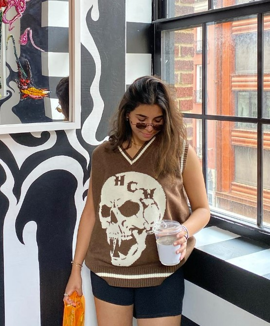
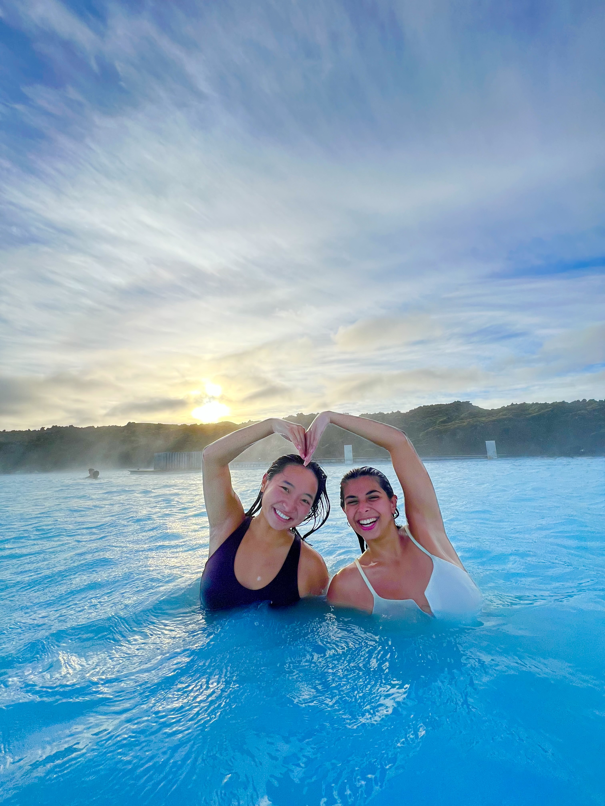
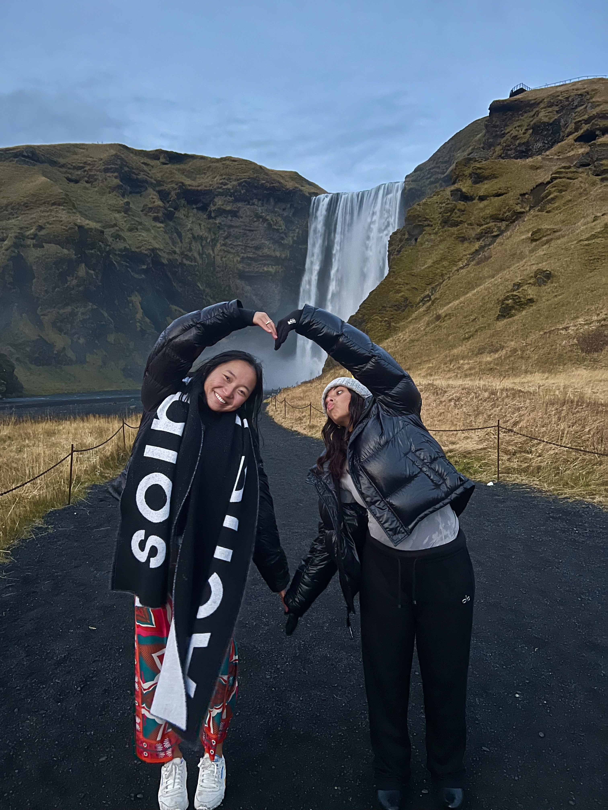
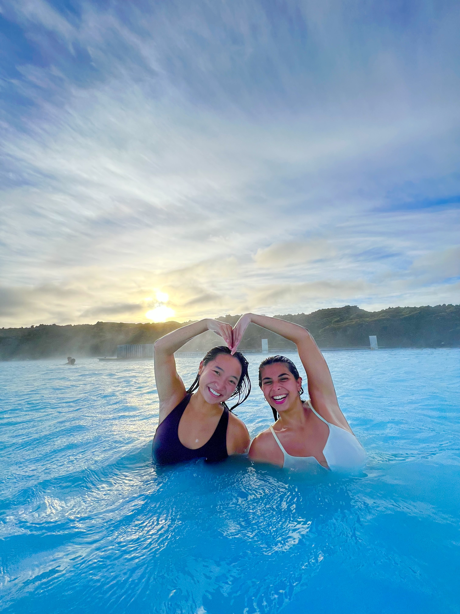
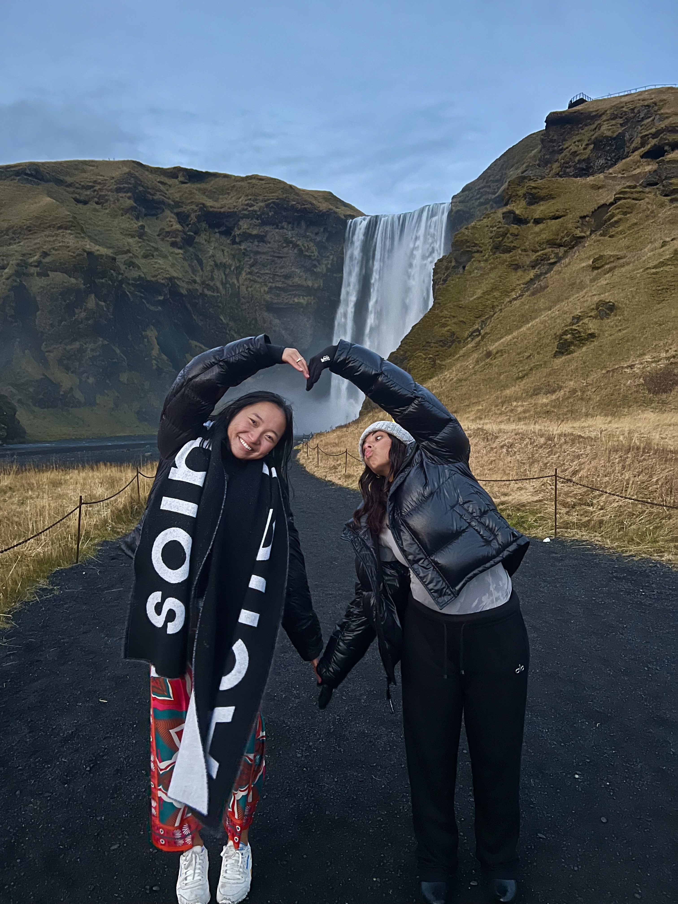

Fatima Alabdulmughni, from Kuwait City, Kuwait
Went to American Creativity Academy in Kuwait

When and how we met: I met Fatima (we call her Fati) last semester
Spring 2022 during an Olin/Babson course we both took called Constructing &
Performing the Self. The objective of this class was to write solo plays
about a self-defining moment in each of our lives to perform at the end of
the semester. Fati performed a genius and hilarious piece about her
experience growing up in Kuwaiti culture and language but also being taught
to love and glorify American culture. We got closer during the week of the
performance because we spent hours and hours with each other for tech week,
then when she became a member of AKPsi, her and I and a couple of our
mutuals went on a trip to a coastal town.This fall ‘22 semester I’ve gotten
to know her even better after two trips with her hiking in Colorado and
exploring Iceland. I am so lucky to have her as a roommate in my suite for
our final semester at Babson and I can’t wait.
Why Fati inspires me: Fati is like no one I have ever met before. She
has everything, humor, brains, kindness, and a beautiful aurora inside and
out. I appreciate her even more after learning her mentality about her
desire to constantly meet new people because she knows she has an end date
to living in the US. It is rare to find someone as great as Fati who is not
only open-minded, but is genuinely so kind to everyone and makes everyone in
the room feel included and at home no matter what. I look up to how much
effort she puts into following what makes her passionate--fostering good
friendships, creating memorable experiences, looking like a top tier model
everyday, pursuing her interest in marketing, and more. I asked her what her
proudest moment in highschool was, and it was the best answer I have gotten:
she talked about this epiphany she had in 11th grade when
“I realized I didn’t care about other people. So I hated the idea of
gossip and stuff like that so I would never engage in any form of gossip;
I’d actively call people out and not put myself in a position where I had
to deal with all that. I thought it was stupid because I never want to
hold information of other people that they did not voluntarily shar with
me, and I just realized I didn’t care. Like why would I care what other
people were doing in their lives, it doesn’t affect me whatsoever, and it
is disrespectful to the people we are talking about. I would say that is
my proudest accomplishment.”
Fati is very special in the way she approaches life with this sense of
carefreeness and grace. She inspires me to do the things I genuinely like to
do, be a kinder person, and laugh a little more.
Dec 2022 What is Fati up to: In Kuwait, Fati founded
this startup in highschool; it was a website for the community to find job
and internship opportunities since they did not use LinkedIn and they do not
have an existing database that had opportunities aggregated in one place.
She worked with over 35 companies and she even had entrepreneurs who wanted
to acquire the company. She has worked for marketing consulting agencies, is
now the VP of AKPsi Marketing, and hopes to pursue that post-grad in May
2023. Beyond AKPsi, Fatima is also part of the Arab Cultural Association,
Muslim Student Association, Students for Justice in Palestine, Tennis Club,
Yoga Club, and Sustainability Club.
Hobbies:
- Fashion (IG @babsonswag)
- Interior Design/Architecture
- Cooking
- Shopping
- Traveling
- The outdoors: Hiking, skiing, surfing
- Singing Safe & Sound
Top 3 memories:
- Performing with you in Constructing & Performing the Self - “I hate you mom, you don’t get me”
- Iceland ice baths & blasting Safe + Sound
 



- Sleepovers in 404
Fati's Dreams: “I think my dream life would be to just be happy and content with my past and present.”